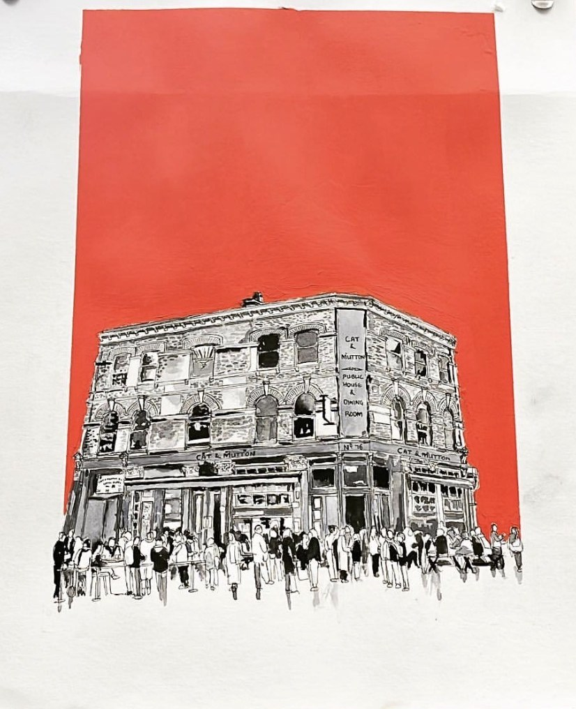

About

Ben Chatira draws buildings and the people around them, then sets each drawing against a single block of colour.
The drawings are made in ink and wash: the stonework, windows and signs worked in fine detail, with a crowd or a street edge drawn more loosely in front. The colour behind is flat and bold, so the building stands out from it.
Alongside the drawings, Ben paints landscapes in acrylic, building up thick, textured fields of colour under open skies.